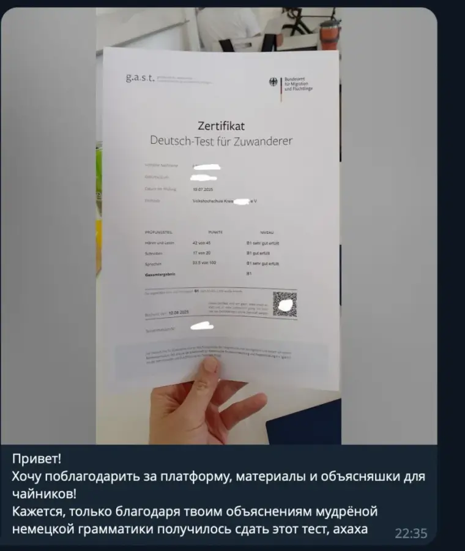
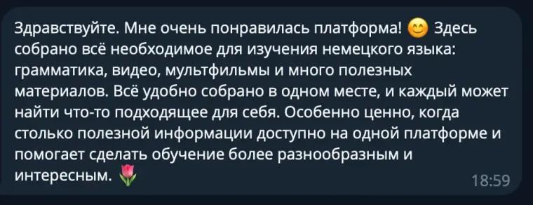

100 слов уровня B1 с примером к каждому
Прилагательные, глаголы, существительные и связки, которые делают речь взрослее: eigentlich, trotzdem, außerdem. Ещё 50 слов по темам бонусом.
- 150слов с примером
- 5тем бонусом
- 7вопросов в тесте
Кодовое слово из ролика: ЛЕКСИКОН
Meiner Meinung nach hast du eigentlich recht.
Сколько стоит одно слово
Внутри Stellas 7500+ слов с аудио и транскрипцией. Делим цену полного пакета A0–C1 на число слов.
По 0,4 цента за слово это 4,00 € из 30 €. Остальное — гайды, тесты и экзамены.
- 340+ гайдов сверху к словам: грамматика, лексика, реальные фразы
- Меньше 9 центов за гайд, если делить 30 € на 340
- 150 слов, как на этой странице, — 0,60 € в пересчёте
Читаешь со словарём в соседней вкладке?
Каждое третье слово уходит в переводчик, и статья на полстраницы занимает час. Грамматика уже есть, не хватает слов. В Stellas 7500+ слов с аудио и транскрипцией, по уровням и ситуациям, а карточки возвращают слово, пока оно не запомнится.
- 340+гайдов A0–C1: объяснение, видео, упражнение, ответы
- 7500+слов с аудио и транскрипцией
- 269гайдов к экзаменам Goethe, telc, ÖSD
- 40пробных тестов с разбором
Три шага к словам B1
- 1
Прочитать вслух
Слово и пример, с артиклем: не Erfahrung, а die Erfahrung.
- 2
Свой пример
На следующий день составь свою фразу с каждым словом, о своей жизни.
- 3
Проверить себя
Через неделю закрой перевод и вспомни. Что забылось, вернётся в повтор.
Подготовка к экзамену внутри
Слова B1 нужны во всех частях экзамена B1: в чтении, аудировании, письме и разговоре. В платформе отдельный блок по экзаменам: формат, типичные ошибки, шаблоны писем и устной части.
- 120Goethe
- 89telc и DTZ
- 60ÖSD
- 40пробников
- Lesen
- Hören
- Schreiben
- Sprechen
«Мои ошибки» собирает вопросы, на которых ты ошибся, чтобы повторить их перед экзаменом.
Что пишут ученики


Сколько стоит
Один платёж, доступ навсегда, обновления бесплатно.
A0–C1 целиком выгоднее всего
30 € 40 €
- Обе платформы: A0–A2 и B1–C1
- 340+ гайдов, 7500+ слов с аудио
- 269 гайдов к экзаменам, 40 пробников
- Бонус: A0–A2 на украинском
Всё в Notion: открывается на телефоне и ноутбуке и работает офлайн в приложении.
Частые вопросы
Почему именно эти слова?
На A1–A2 хватает простых слов. На B1 нужны слова для мнения, планов и оценок: eigentlich, trotzdem, die Meinung, entscheiden.
Зачем учить слово с артиклем?
Артикль меняет окончания в падежах. Если запомнить die Erfahrung сразу, потом не придётся угадывать.
Как учить: списком или во фразах?
Во фразах. Прочитай пример, потом составь свой: так слово запоминается вместе с грамматикой.
Сколько слов в день?
По 10. 150 слов — это 15 дней, если каждый день добавлять десятку и повторять вчерашнюю.
Одна тема здесь. 340+ внутри.
340+ тем от A0 до C1, разобранных так же, как эта: по порядку, с упражнениями и ответами.